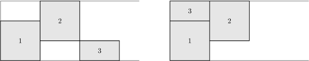

第一行为一个整数t(1<=t<=20)，表示测试数据数量。
对于每组测试数据，第一行两个整数n,w(1<=n<=50000,1<=w<=10^9)，分别表示车的数量和停车场的宽度。
接下来n行，第i行有四个整数x1,y1,x2,y2(0<=x1,x2<=10^9,0<=y1,y2<=w)，表示编号为i的车的当前位置是由x1,y1,x2,y2确定的矩形。（注意：数据有可能出现x1>x2或y1>y2）
再接下来n行，格式和意义同上，表示车的目标位置。
你的老板命令你将停车场里的车移动成他想要的样子。
停车场是一个长条矩形，宽度为w。我们以其左下角顶点为原点，坐标轴平行于矩形的边，建立直角坐标系。停车场很长，我们可以认为它一直向右边伸展到无穷远处。
车都是边平行于坐标轴的矩形，大小可能不同。你可以将车任意地平移（但不能旋转），只要他们不超出停车场的边界，且不能互相碰撞，但紧挨着是允许的（即任意时刻任两辆车的重叠面积为0）。
你知道目前各辆车的摆放位置，以及老板心中所想的位置。你需要判断是否可以办到老板的任务。

第一行为一个整数t(1<=t<=20)，表示测试数据数量。
对于每组测试数据，第一行两个整数n,w(1<=n<=50000,1<=w<=10^9)，分别表示车的数量和停车场的宽度。
接下来n行，第i行有四个整数x1,y1,x2,y2(0<=x1,x2<=10^9,0<=y1,y2<=w)，表示编号为i的车的当前位置是由x1,y1,x2,y2确定的矩形。（注意：数据有可能出现x1>x2或y1>y2）
再接下来n行，格式和意义同上，表示车的目标位置。
输出t行，第i行为TAK（是）或NIE（否），表示第i组测试数据中能否按照要求进行移动。
2
3 3
0 0 2 2
2 1 4 3
4 0 6 1
0 0 2 2
2 1 4 3
0 2 2 3
3 3
0 0 2 2
2 1 4 3
4 0 6 1
2 1 4 3
0 0 2 2
4 0 6 1
TAK
NIE